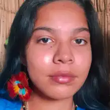
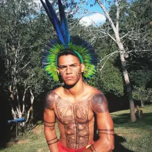
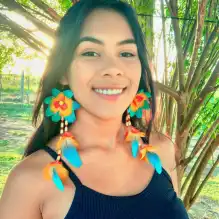
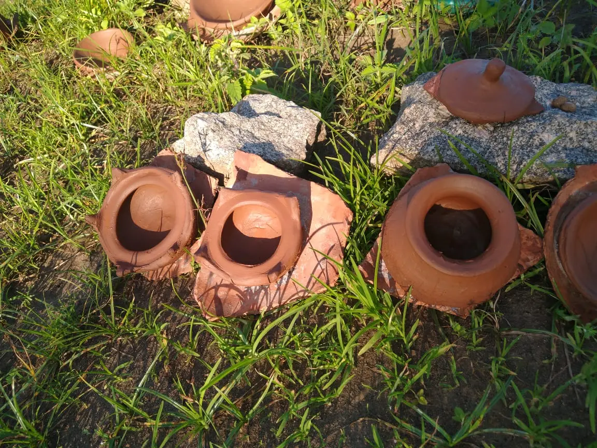
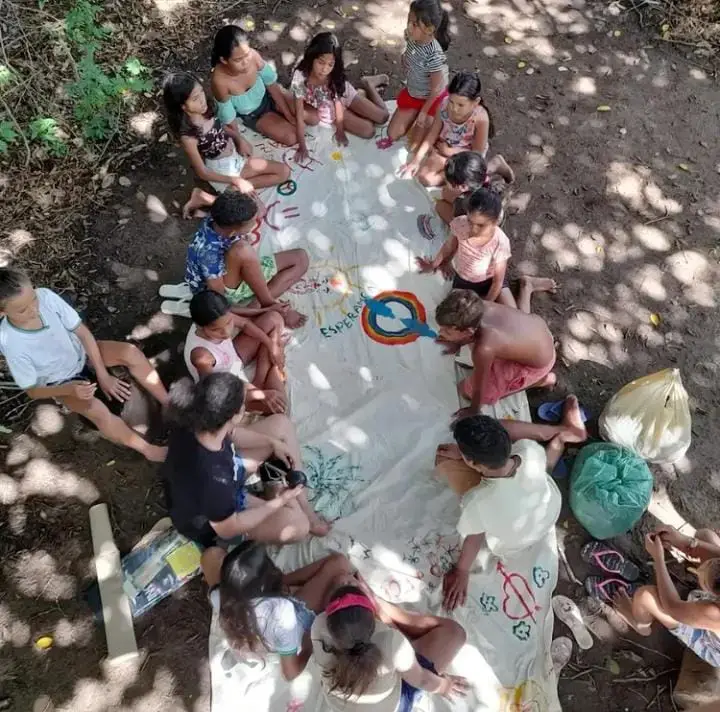
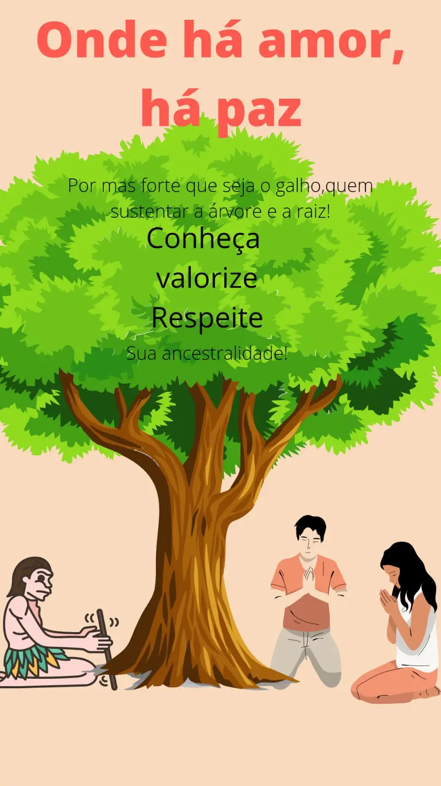

Povo Fulkaxó - AL

"Sôtxa Kaká, eu sou Yetsãmy, tenho 16 anos de idade, sou uma jovem indígena da aldeia Fulkaxó, nasci em Salvador/BA e fui criada na reserva indígena Thá-Fene no bairro Quingoma em Lauro de Freitas, com a orientação e a educação dos meus familiares; dentro dos costumes do meu povo, faço parte de uma liderança jovem, e tenho como objetivo aprender ao máximo sobre a minha cultura, para passar esses conhecimentos aos mais novos."

"Kanghy Kayá, me chamo Wmanamy, tenho 21 anos e sou indígena Kariri-xocó. Sou um jovem aprendiz, trabalho com artesanato indígena dando continuidade à nossa cultura. Uma das coisas que eu gostaria de ver no site é saber dos costumes de cada território, ter um pouco de conhecimento das tradições de cada povo. Penso que isso é de grande importância."

"Kanghy Kayá, me chamo Swynara, tenho 17 anos e sou indígena Kariri-xocó. Sou uma jovem aprendiz da minha cultura, dando continuidade nos nossos cantos de toré e rojão, uma parte forte da nossa tradição. Gostaria de ver no site os costumes de cada território, suas origens e suas tradições."
História Fulkaxó e preservação dos rituais
A aldeia Fulkaxó surgiu da junção das três etnias: Kariri, Xocó e Fulniô. Foi dado início a essa luta/conquista através de um sonho da minha bisavó, Ivete Nunes de Oliveira, com o objetivo de estar em um lugar mais distante da cidade, para fortalecer as práticas e saberes da nossa cultura, se conectar profundamente com a nossa natureza e evitar conflitos com as modernizações colonizadas e acentuadas devido ao tamanho crescimento constante populacional.
A luta pelas nossas terras teve seu início em 2006, mas já estava sendo idealizada desde 1995; hoje a aldeia Fulkaxó tem em média 87 famílias com quatro lideranças: o pajé Soyre, o cacique Txydjo, o conselheiro Wakay e a conselheira Txidja. Juntos, os mesmos nos direcionam usando o diálogo em conjunto, para que possamos ter uma educação mais centrada nos rituais, a fim de entendermos de onde viemos, porque saímos do foco populacional e porque temos que voltar aos nossos costumes e raízes culturais.
A denominação Kariri-Xocó foi adotada como consequência da mais recente fusão, ocorrida há cerca de 100 anos entre os Kariri de Porto Real de Colégio e parte dos Xocó da ilha fluvial sergipana de São Pedro. Estes, quando foram extintas as aldeias indígenas pela política fundiária do Império, tiveram suas terras aforadas e invadidas, indo buscar refúgio junto aos Kariri da outra margem do rio. Kariri (ou Kirirí), por outro lado, é um nome recorrente no Nordeste e evoca uma grande nação que teria ocupado boa parte do território dos atuais estados nordestinos, desde a Bahia até o Maranhão. As referências a Xocó (ou Ciocó) remontam ao século XVIII.
Educação desde o ventre
A educação da nossa comunidade vem sendo orientada desde o ventre. O diálogo com as nossas crianças é um dos mais importantes para o aprendizado delas. Trabalhamos com a preservação dos nossos rituais internos, ensinando e as guiando para que elas saibam o que pode ou não ser dito. Passamos esses conhecimentos muito antes da educação que é dada nas escolas, já servindo para que elas saibam lidar com o ambiente escolar e o mundo lá fora, mas, claro, respeitando a diversidade de cada ser vivo, e cumprindo o seu papel como um povo originário. – Yetsãmy.


